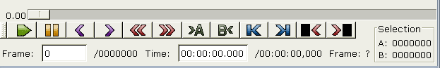
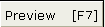
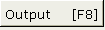

|
Элементы управления 1.Панель управления  Нажмите один раз для воспроизведения, второй для останова Переместит на предыдущий кадр. Это может занять несколько секунд, т.к. avidemux вынужден обратиться к предыдущему ключевому кадру. Следующий кадр.  Открывает окно предпросмотра с разультатами работы фильтров. Обновляется вместе с основным окном. Это режим предпросмотра очень медленный.  Когда нажата, главное окно будет отображать видео с результатами наложения фильтров при воспроизведении и только при воспроизведении. Это быстрый метод и в большинстве случаев вы увидите эффекты в реальном режиме времени. |
 Остановит воспроизведение
Остановит воспроизведение
 Возвращает на предыдущий keyframe.
Возвращает на предыдущий keyframe.
 Следующий ключевой кадр ( keyframe).
Следующий ключевой кадр ( keyframe).
 Установить маркер A (см.
Установить маркер A (см.  Установить маркер B (см.
Установить маркер B (см.  Перейти на первый кадр
Перейти на первый кадр
 Перейти на последний кадр
Перейти на последний кадр
 Выбор активного источника звука (avi/external wav/external MP3..)
Выбор активного источника звука (avi/external wav/external MP3..)